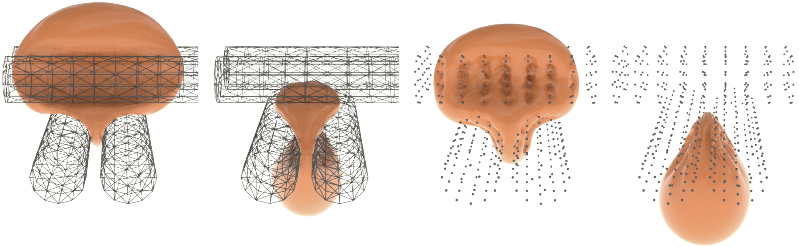

Squeeze out: Incremental Potential Contact (IPC) enables high-rate time stepping, here with h = 0.01s, of extreme nonlinear elastodynamics with contact that is intersection- and inversion-free at all time steps, irrespective of the degree of compression and contact. Here a plate compresses and then forces a collection of complex soft elastic FE models (181K tetrahedra in total, with a neo-Hookean material) through a thin, codimensional obstacle tube. The models are then compressed entirely together forming a tight mush to fit through the gap and then once through they cleanly separate into a stable pile.
Incremental Potential Contact:
Intersection- and Inversion-free Large Deformation Dynamics
Intersection- and Inversion-free Large Deformation Dynamics
Minchen Li1,2,
Zachary Ferguson3,
Teseo Schneider3,
Timothy Langlois2,
Denis Zorin3,
Daniele Panozzo3,
Chenfanfu Jiang1, Danny M. Kaufman2
Chenfanfu Jiang1, Danny M. Kaufman2
1University of Pennsylvania, 2Adobe Research, 3New York University
ACM Transactions on Graphics (SIGGRAPH), 2020
Paper
Abstract
Contacts weave through every aspect of our physical world, from daily household chores to acts of nature. Modeling and predictive computation of these phenomena for solid mechanics is important to every discipline concerned with the motion of mechanical systems, including engineering and animation. Nevertheless, efficiently time-stepping accurate and consistent simulations of real-world contacting elastica remains an outstanding computational challenge. To model the complex interaction of deforming solids in contact we propose Incremental Potential Contact (IPC) – a new model and algorithm for variationally solving implicitly time-stepped nonlinear elastodynamics. IPC maintains an intersection- and inversion-free trajectory regardless of material parameters, time step sizes, impact velocities, severity of deformation, or boundary conditions enforced.
Constructed with a custom nonlinear solver, IPC enables efficient resolution of time-stepping problems with separate, user-exposed accuracy tolerances that allow independent specification of the physical accuracy of the dynamics and the geometric accuracy of surface-to-surface conformation. This enables users to decouple, as needed per application, desired accuracies for a simulation’s dynamics and geometry.
The resulting time stepper solves contact problems that are intersectionfree (and thus robust), inversion-free, efficient (at speeds comparable to or faster than available methods that lack both convergence and feasibility), and accurate (solved to user-specified accuracies). To our knowledge this is the first implicit time-stepping method, across both the engineering and graphics literature that can consistently enforce these guarantees as we vary simulation parameters.
In an extensive comparison of available simulation methods, research libraries and commercial codes we confirm that available engineering and computer graphics methods, while each succeeding admirably in custom-tuned regimes, often fail with instabilities, egregious constraint violations and/or inaccurate and implausible solutions, as we vary input materials, contact numbers and time step. We also exercise IPC across a wide range of existing and new benchmark tests and demonstrate its accurate solution over a broad sweep of reasonable time-step sizes and beyond (up to h=2s) across challenging large-deformation, large-contact stress-test scenarios with meshes composed of up to 2.3M tetrahedra and processing up to 498K contacts per time step. For applications requiring high-accuracy we demonstrate tight convergence on all measures. While, for applications requiring lower accuracies, e.g. animation, we confirm IPC can ensure feasibility and plausibility even when specified tolerances are lowered for efficiency.
Video
Source Code and Data
BibTex
@article{Li2020IPC,
author = {Minchen Li and Zachary Ferguson and Teseo Schneider and Timothy Langlois and
Denis Zorin and Daniele Panozzo and Chenfanfu Jiang and Danny M. Kaufman},
title = {Incremental Potential Contact: Intersection- and Inversion-free Large Deformation Dynamics},
journal = {ACM Transactions on Graphics},
year = {2020},
volume = {39},
number = {4}
}
Supplemental Documents
Supplement A: Technical Details (PDF)
Supplement B: Comparison Details (PDF)
Supplement C: Statistics (PDF)
Results

High-speed impact test: Top: we show key frames from a highspeed video capture of a foam practice ball fired at a fixed plate. Matching reported material properties (0.04m diameter, E = 107Pa, ν = 0.45, ρ = 1150kg/m3) and firing speed (v0 = 67m/s), we apply IPC to simulate the set-up with Newmark time stepping at h = 2e−5s to capture the highfrequency behaviors. Middle and bottom: IPC-simulated frames at times corresponding to the video frames showing respectively, visualization of the simulated velocity magnitudes (middle) and geometry (bottom).
Squishy ball scaling test: Simulated by IPC, an elastic squishy ball toy model (688K nodes, 2.3M tets) is thrown at a glass wall. The left three frames show side views before, at, and after the moment of maximal compression during impact. The right-most frame then shows the view behind the glass during the moment of maximal compression, highlighting how all of the toy’s intricately intertwined tendrils remain intersection free.

Codimensional collision tests: Here we simulate collisions with codimensional moving obstacles using only the mesh edge segments (left) or even just the mesh vertices (right) for the rotating roller. For these extremely challenging tests IPC continues robust simulation exhibiting tight compliant shapes in contact regions pressed by the sharp obstacles.